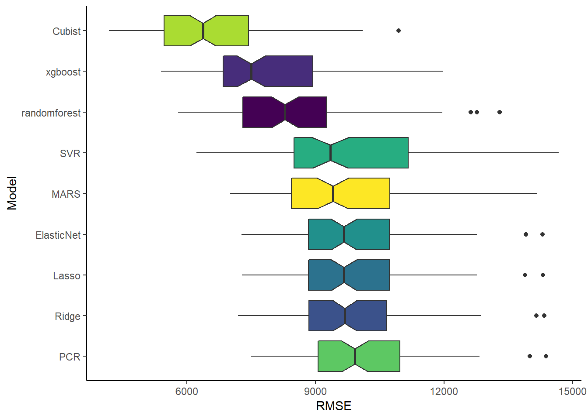
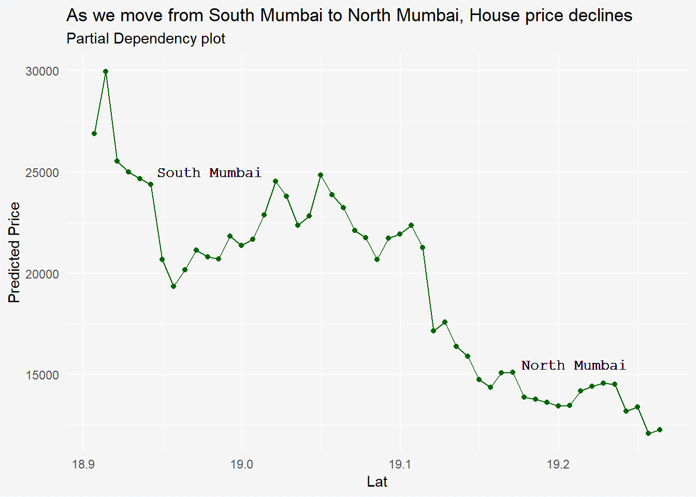

Model Design
Here we will prepare various regression models for predicting house prices and choose a final model. We will start off in tidymodel style and later use the famous caret package to build model.
This is a long article as we follow a step by step detailed instruction. I would recommend not to miss the end part explaining black box model, a relatively new concept that helps us to decode black box models.
Which model to select?
Borrowed from Aurélien Géron “Hands on ML” book, we will use the following steps to reach promising models.
- Train many quick and dirty models from different categories using standard parameters.
- Measure and compare their performance.
- Analyze the most significant variables for each algorithm.
- Have a quick round of feature selection and engineering.
- Short-list the top three to five most promising models, preferring models that make different types of errors.
#plyr library is just to avoid conflicts with dplyr
library(plyr);library(tidyverse); library(caret); library(tidymodels); library(DT)
library(ranger); library(xgboost); library(glmnet); library(e1071); library(pls); library(Cubist); library(earth); library(Cubist); library(DALEX); library(breakDown)
nb_data <- readRDS("nb_data.rds")Download nb_data.rds
Split Data
Lets split our data in test and training set. We will use the rsample package for split.
set.seed(42)
train_test_split <- initial_split(nb_data)
nb_train <- training(train_test_split)
nb_test <- testing(train_test_split)Pre Process
Lets impute missing values. We already have the missing value information from data cleaning.
As we will prepare multiple models, lets create a structure for our model i.e. set preprocessing steps to our model.
rec_obj <- recipe(HousePriceinK ~ ., data = nb_train) %>% #1
step_knnimpute(all_predictors()) %>% #2
step_dummy(all_predictors(), -all_numeric()) #3
prepare_rec <- rec_obj %>% prep(training = nb_train) #4
train_data <- prepare_rec %>% #5
bake(nb_train) %>%
select(-HousePriceinK, everything())
test_data <- prepare_rec %>% #5
bake(nb_train) %>%
select(-HousePriceinK, everything())
x_col <- 1:39 #35
y_col <- 40 #36- Creating a structure for our model, the data argument is just to identify variables.
- Impute missing value through KNN algorithm, the default value is 5.
- Convert nominal data into numeric hot encoding.
- Run reprocess step on our data.
- Apply our prepossessing steps on training and test set.
We can apply various preprocessing steps such as stp_center, step_scale, etc from the recipes package.
Train Model
We will train the following ten models; the applied predictive modeling book suggest to start from complex and move towards simpler modelling techniques.
- RandomForest
- xgBoost
- Ridge Regression
- Lasso Regression
- ElasticNet Regression
- Support vector regression
- Principal Component Regression (PCR)
- Cubist
- Multivariate Adaptive Regression Splines (MARS)
- Other (Polynomial?)
- Linear Regression see here
Click here to directly move to results instead!
Random Forest
Random Forests work by training many Decision Trees on random subsets of the features, then averaging out their predictions.
library(ranger)
rf_model <- ranger(HousePriceinK ~ ., data = train_data, num.trees = 500)
rf_prediction <- rf_model %>%
predict(train_data[x_col]) %>%
predictions() xgBoost
Gradient Boosting works by sequentially adding predictors to an ensemble, each one correcting its predecessor.
library(xgboost)
xgb_model <- xgboost(data = as.matrix(train_data[x_col]), label = as.matrix(train_data[y_col]), nrounds = 500, verbose = 0)
xg_prediction <- xgb_model %>%
predict(as.matrix(train_data[x_col]))Ridge Regression
library(glmnet)
ridge_model <- cv.glmnet(x = as.matrix(train_data[x_col]), y = as.matrix(train_data[y_col]), alpha = 0)
ridge_predict<- ridge_model %>%
predict(as.matrix(train_data[x_col]), s = ridge_model$lambda.min) #s is panelty valueLasso Regression
library(glmnet)
lasso_model <- cv.glmnet(x = as.matrix(train_data[x_col]), y = as.matrix(train_data[y_col]), alpha = 1)
lasso_predict<- lasso_model %>%
predict(as.matrix(train_data[x_col]), s = lasso_model$lambda.min)ElasticNet Regression
elastic_model <- cv.glmnet(x = as.matrix(train_data[x_col]), y = as.matrix(train_data[y_col]), alpha = 0.5)
elastic_predict<- elastic_model %>%
predict(as.matrix(train_data[x_col]), s = elastic_model$lambda.min)Support Vector Regression
library(e1071)
svr_model <- svm(HousePriceinK ~ ., data = train_data, type = "eps-regression", kernel = "radial")
svr_predict <- svr_model %>%
predict(train_data[x_col])Principal component regression (PCR)
The principal components regression (PCR) constructs principal components (new and fewer variables); then use these components in a linear regression.
library(pls)
pcr_model <- pcr(HousePriceinK ~ ., data = train_data, scale = TRUE)
pcr_predict <- pcr_model %>%
predict(train_data[x_col], ncomp = 34)
#Using summary(pcr_model), we identify that with 34 ncomp 95% of X is retained.Cubist
Like xgBoost, Cubist is a boosting technique plus it also performs neighbor based instance technique to get result.
library(Cubist)
cubist_model <- cubist(x = as.matrix(train_data[x_col]), y = as.matrix(train_data[y_col]), committees = 5)
cubist_predict <- cubist_model %>%
predict(as.matrix(train_data[x_col]))Multivariate Adaptive Regression Splines
library(earth)
mars_model <- earth(HousePriceinK ~ ., data = train_data)
mars_predict <- mars_model %>%
predict(train_data[x_col])Other
# lm_model <- lm(HousePriceinK ~ ., data = train_data)
#
# lm_predict <- lm_model %>%
# predict(train_data[x_col])Compare Performance
For a regression problem, the Root Mean Square Error - RMSE is a best indicator of performance
# Collate all predicted values
results <- tibble(
Actual = train_data$HousePriceinK,
RF = rf_prediction,
xg = xg_prediction,
ridge = ridge_predict %>% as.vector(),
lasso = lasso_predict %>% as.vector(),
elasticnet = elastic_predict %>% as.vector(),
svr = svr_predict %>% as.vector(),
PCR = pcr_predict %>% as.vector(),
cubist = cubist_predict,
MARS = mars_predict %>% as.vector()
#MLR = lm_predict %>% as.vector()
)
# Calculate RMSE from yardstick::rmse
RMSE <- tibble(
RMSE_RF = results %>% rmse(Actual, RF),
RMSE_XGB = results %>% rmse(Actual, xg),
RMSE_Ridge = results %>% rmse(Actual, ridge),
RMSE_Lasso = results %>% rmse(Actual, lasso),
RMSE_Elastic = results %>% rmse(Actual, elasticnet),
RMSE_SVR = results %>% rmse(Actual, svr),
RMSE_PCR = results %>% rmse(Actual, PCR),
RMSE_Cubist = results %>% rmse(Actual, cubist),
RMSE_MARS = results %>% rmse(Actual, MARS)
#RMSE_MLR = results %>% rmse(Actual, MLR),
) %>%
gather(key = "Model", value = "RMSE") %>%
arrange(RMSE)
RMSE %>%
datatable(rownames = FALSE, options = list(dom = "t")) %>%
formatRound(2)With default values of the model, we notice that xgBoost provides the best performance, but presumably it also overfits.
Next, lets use cross validation technique to evaluate over-fitting of models. Later on, we will tune hyper-parameters of models to check for better performance.
Cross Validation
We will create a 10 cross validation set, each repeated 10 times. Here is a short introduction for cross validation.
set.seed(42)
# Create 10 splits of data, repeat it for 5 times i.e create 50 samples.
cv_train <- nb_train %>% vfold_cv(v = 10, repeats = 10)
# First set
dim(cv_train$splits[[1]])## analysis assessment n p
## 4482 499 4981 20In our train set we have 4,986 observation, with cross validation approx 4487 (90%) observation will be used to train and approx 499 (10%) observation will be used to test. This entire process will be repeated 10 times
# Function Start
multiple_model <- function(split, ...){
cv_trainset <- prepare_rec %>%
bake(analysis(split)) %>%
select(-HousePriceinK, everything())
cv_testset <- prepare_rec %>%
bake(assessment(split)) %>%
select(-HousePriceinK)
# This looks conjusted, all we doing is repeating the single model with new cross validation data sets.
rfmod <- ranger(HousePriceinK ~ ., data = cv_trainset, num.trees = 500)
xgmod <- xgboost(data = as.matrix(cv_trainset[x_col]), label = as.matrix(cv_trainset[y_col]), nrounds = 500, verbose = 0)
ridgemod <- cv.glmnet(x = as.matrix(cv_trainset[x_col]), y = as.matrix(cv_trainset[y_col]), alpha = 0)
lassomod <- cv.glmnet(x = as.matrix(cv_trainset[x_col]), y = as.matrix(cv_trainset[y_col]), alpha = 1)
elasticmod <- cv.glmnet(x = as.matrix(cv_trainset[x_col]), y = as.matrix(cv_trainset[y_col]), alpha = 0.5)
svrmod <- svm(HousePriceinK ~ ., data = cv_trainset, type = "eps-regression", kernel = "radial")
pcrmodel <- pcr(HousePriceinK ~ ., data = cv_trainset)
cubistmod <- cubist(x = as.matrix(train_data[x_col]), y = as.matrix(train_data[y_col]), committees = 5)
marsmod <- earth(HousePriceinK ~ ., data = cv_trainset)
#lmmod <- lm(HousePriceinK ~ ., data = cv_trainset)
# Store predictions on each cross validation samples
cv_results <- tibble(
actual = assessment(split) %>% select(HousePriceinK) %>% pull(),
rfpred = rfmod %>% predict(cv_testset) %>% predictions(),
xgpred = xgmod %>% predict(as.matrix(cv_testset)),
ridpred = ridgemod %>% predict(as.matrix(cv_testset), s = ridgemod$lambda.min) %>% as.vector(),
lassopred = lassomod %>% predict(as.matrix(cv_testset), s = lassomod$lambda.min) %>% as.vector(),
elasticpred = elasticmod %>% predict(as.matrix(cv_testset), s = elasticmod$lambda.min) %>% as.vector(),
svrpred = svrmod %>% predict(cv_testset) %>% as.vector(),
pcrpred = pcrmodel %>% predict(cv_testset, ncomp = 34) %>% as.vector(),
cubistpred = cubistmod %>% predict(cv_testset),
marspred = marsmod %>% predict(cv_testset) %>% as.vector()
#lmpred = lmmod %>% predict(cv_testset) %>% as.vector()
)
cv_RMSE <- tibble(
randomforest = cv_results %>% rmse(actual, rfpred),
xgboost = cv_results %>% rmse(actual, xgpred),
Ridge = cv_results %>% rmse(actual, ridpred),
Lasso = cv_results %>% rmse(actual, lassopred),
ElasticNet = cv_results %>% rmse(actual, elasticpred),
SVR = cv_results %>% rmse(actual, svrpred),
PCR = cv_results %>% rmse(actual, pcrpred),
Cubist = cv_results %>% rmse(actual, cubistpred),
MARS = cv_results %>% rmse(actual, marspred)
#MLinR = cv_results %>% rmse(actual, lmpred)
)
}
# Function End
# Run the multiple model function on each cross validation split
cv_train$RMSE <- map(cv_train$splits, multiple_model)
cv_train <- cv_train %>%
unnest(RMSE)
#saveRDS(cv_train, "cv_rsample.rds")Post-hoc Analysis
Model statistics
We now have 50 RMSE scores, let’s analyze.
stacked_rmse <- cv_train %>%
gather(key = "model", value = "statistic", -splits, -id, -id2)
stacked_rmse %>%
group_by(model) %>%
summarise(Average = mean(statistic),
SD = sd(statistic),
Min = min(statistic),
Max = max(statistic)
) %>%
datatable(rownames = FALSE, options = list(dom = "t")) %>%
DT::formatRound(2:5)Graphical Representaion of models
stacked_rmse %>%
ggplot(aes(fct_reorder(model, statistic, median, .desc = TRUE), statistic, fill = model)) +
geom_boxplot(notch = TRUE) +
coord_flip() +
theme_classic() +
labs(x = "Model", y = "RMSE") +
scale_fill_viridis_d(option = "D") +
theme(legend.position = "none")
From the above visualization we observe that cubist, xgboost and RandomForest are the top three models. Although Cubist has the best performance but it some variations.
For this project we will select this three models and optimize their performance to see if they can be improved further.
Hyperparameters tuning
Various models needs manual parameters, like KNN needs number of nearest neighbor, randomForest needs number of trees to build. We need to tune this hyper-parameters and identify the best ones that optimize our results.
We will now tune the hyper-parameters of the selected three models to identify the best parameters.
Cross validation
set.seed(42)
ctrl <- trainControl(method = "repeatedcv", number = 10, repeats = 10, savePredictions = TRUE, allowParallel = TRUE)Cubist
Cubist has two hyper-parameters, committees and neighbors.
set.seed(42)
cub_grid <- expand.grid(committees = c(50, 100),
neighbors = c(0, 1, 5, 9))
cubist_train <- train(rec_obj,
data = nb_train,
method = "cubist",
metric = "RMSE",
trControl = ctrl,
tuneGrid = cub_grid
)
saveRDS(cubist_train, file = "cubist_cv_model.rds") #7272.125
#cubist_train <- readRDS("cubist_cv_model.rds")cub_pred <- cubist_train %>% predict(as.matrix(train_data[x_col]))
tibble(
Actual = train_data$HousePriceinK,
cub_pred = cub_pred
) %>%
rmse(Actual, cub_pred)## [1] 4694.769xgBoost
The xgboost model has number of rounds, maximum depth to build, eta, gamma, column sample by tree, minimum child weight and subsample hyper-parameters.
set.seed(42)
xgb_grid <- expand.grid(
nrounds = c(50, 75, 100),
max_depth = 6,
eta = 0.3,
gamma = 0,
colsample_bytree = 1,
min_child_weight = 1,
subsample = 1
)
xgb_train <- train(rec_obj,
data = nb_train,
method = "xgbTree",
metric = "RMSE",
trControl = ctrl,
tuneGrid = xgb_grid
)
saveRDS(xgb_train, file = "xgb_cv_model.rds")
#xgb_train <- readRDS("xgb_cv_model.rds")xgb_pred <- xgb_train %>% predict(train_data[x_col])
tibble(
Actual = train_data$HousePriceinK,
xgb_pred = xgb_pred
) %>%
rmse(Actual, xgb_pred)## [1] 2304.692RandomForest
RandomForest has mtry - number of features to use, splitrule and minimum node size hyper-parameters.
#start <- Sys.time()
set.seed(42)
rf_grid <- expand.grid(
mtry = 3:8, # default value used was 6 #No of features to use
splitrule = c("variance", "extratrees", "maxstat"), #Rule on which split should be based on
min.node.size = 5
)
rf_train <- train(rec_obj,
data = nb_train,
method = "ranger",
metric = "RMSE",
trControl = ctrl,
tuneGrid = rf_grid,
num.trees = 500
)
#(end <- Sys.time() - start)
saveRDS(rf_train, file = "rf_cv_model.rds")
#rf_train <- readRDS("rf_cv_model.rds")rf_pred <- rf_train %>% predict(train_data[x_col])
tibble(
Actual = train_data$HousePriceinK,
rf_pred = rf_pred
) %>%
rmse(Actual, rf_pred)## [1] 4096.116Note: The caret package supports 256 models, the hyper parameters of these models can be found here.
Group RMSE
com_pred <- tibble(
Actual = train_data$HousePriceinK,
cub_pred = cub_pred,
xgb_pred = xgb_pred,
rf_pred = rf_pred
)
optimize_RMSE <- tibble(
cubist = com_pred %>% rmse(Actual, cub_pred),
xgboost = com_pred %>% rmse(Actual, xgb_pred),
randomforest = com_pred %>% rmse(Actual, rf_pred)
)
optimize_RMSE %>%
gather(model, RMSE) %>%
arrange(RMSE)## # A tibble: 3 x 2
## model RMSE
## <chr> <dbl>
## 1 xgboost 2305.
## 2 randomforest 4096.
## 3 cubist 4695.In the above table we observe that after tuning the hyper-parameters of our models, xgboost has the best performance. Before we zero down on this model, lets try the model with different seeds.
Different seeds
Remember, xgboost creates sample of our datasets. We can use seeds to reproduce our results. We will use various seeds to test if initial seed had any influence on our model.
blank <- tibble(Actual = train_data$HousePriceinK)
multiple_seed <- function(seedno, recipe, data, ...){
set.seed(seedno)
xgb_train <- train(recipe,
data = data,
method = "xgbTree",
metric = "RMSE"
#trControl = ctrl,
#tuneGrid = xgb_grid
)
xgb_pred <- xgb_train %>% predict(train_data[1:35])
blank %>%
mutate(!!paste0("n", seedno) := xgb_pred)
#saveRDS(xgb_train, file = paste0("xgb_cv_model",seedno,".rds"))
return(blank)
}
with_seeds <- map(c(1, 100, 500, 1000), multiple_seed, recipe = rec_obj, data = nb_data)rmse_multiple_seed <- as.data.frame(with_seeds) %>% as.tibble() %>% select(Actual, n1, n100, n500, n1000) %>% mutate(n42 = xgb_train %>% predict(train_data[x_col]))
rmse_various_seeds <- tibble(
n1 = rmse_multiple_seed %>% rmse(Actual, n1),
n42 = rmse_multiple_seed %>% rmse(Actual, n42),
n100 = rmse_multiple_seed %>% rmse(Actual, n100),
n500 = rmse_multiple_seed %>% rmse(Actual, n500),
n1000 = rmse_multiple_seed %>% rmse(Actual, n1000)
)
rmse_various_seeds %>%
gather(key = "Seed_No", value = "RMSE")## # A tibble: 5 x 2
## Seed_No RMSE
## <chr> <dbl>
## 1 n1 2721.
## 2 n42 2305.
## 3 n100 2581.
## 4 n500 2595.
## 5 n1000 2660.Final Model
From above, we observe that xgBoost gives the best performance on training dataset. For now, we select it as our final model and use it on test data to evaluate generalization.
Generalization
tibble(
Actual = test_data %>% pull(HousePriceinK),
Prediction = xgb_train %>% predict(test_data[x_col])
) %>%
rmse(Actual, Prediction)## [1] 2254.172As the RMSE on the test data is similar to the one of train data, we can conclude that it generalize well on unseen data.
Explaining Black box models
Identify important varaibles.
Even though we have finalized our model, just for the sake of this post we will identify important variables of our top three models
library(DALEX); library(breakDown)
xgb_explainer <- xgb_train %>%
explain(label = "xgb", data = train_data, y = train_data$HousePriceinK)
rf_explainer <- rf_train %>%
explain(label = "rf", data = train_data, y = train_data$HousePriceinK)
cubist_explainer <- cubist_train %>%
explain(label = "Cubist", data = train_data, y = train_data$HousePriceinK)
# plot(model_performance(xgb_explainer),
# model_performance(rf_explainer),
# model_performance(cubist_explainer)
# )vi_xgb <- xgb_explainer %>%
variable_importance(loss_function = loss_root_mean_square)
vi_rf <- rf_explainer %>%
variable_importance(loss_function = loss_root_mean_square)
vi_cusit <- cubist_explainer %>%
variable_importance(loss_function = loss_root_mean_square)
plot(vi_xgb, vi_rf, vi_cusit)In all three models the top three important variables are Area, Lat, Long.
Individual varaible performance
Lets focus on the important variables again, but specifically with our model and individual variable performance.
a <- xgb_explainer %>% variable_response(variable = "Area", type = "pdp")
b <- xgb_explainer %>% variable_response(variable = "Lat", type = "pdp")
c <- xgb_explainer %>% variable_response(variable = "Long", type = "pdp")Area
as.tibble(a) %>%
ggplot(aes(x, y)) +
geom_line(col = "darkgreen") +
geom_point(col = "darkgreen") +
labs(x = "Area", y = "Predicted Price", title = "As area increases HousePrice increases", subtitle = "Partial Dependency plot") +
theme_mi2()
Latitude
As we move from South Mumbai to North Mumbai, House price declines. Note: 18.9 is south and 19.2 is North
as.tibble(b) %>%
ggplot(aes(x, y)) +
geom_line(col = "darkgreen") +
geom_point(col = "darkgreen") +
geom_text(x = 18.98, y = 25000, label = "South Mumbai", col = "black", family = "mono") +
geom_text(x = 19.21, y = 15500, label = "North Mumbai", col = "black", family = "mono") +
labs(x = "Lat", y = "Predicted Price", title = "As we move from South Mumbai to North Mumbai, House price declines", subtitle = "Partial Dependency plot") +
theme_mi2()
Longitude
As we move from west to east, House price declines. Not 72.80 is East and 72.95 is west - plot on graph.
as.tibble(c) %>%
ggplot(aes(x, y)) +
geom_line(col = "darkgreen") +
geom_point(col = "darkgreen") +
geom_text(x = 72.80, y = 22500, label = "West Mumbai", col = "black", family = "mono") +
geom_text(x = 72.95, y = 14200, label = "East Mumbai", col = "black", family = "mono") +
labs(x = "Lat", y = "Predicted Price", title = "As we move from West Mumbai to South Mumbai, House price declines", subtitle = "Partial Dependency plot") +
theme_mi2()